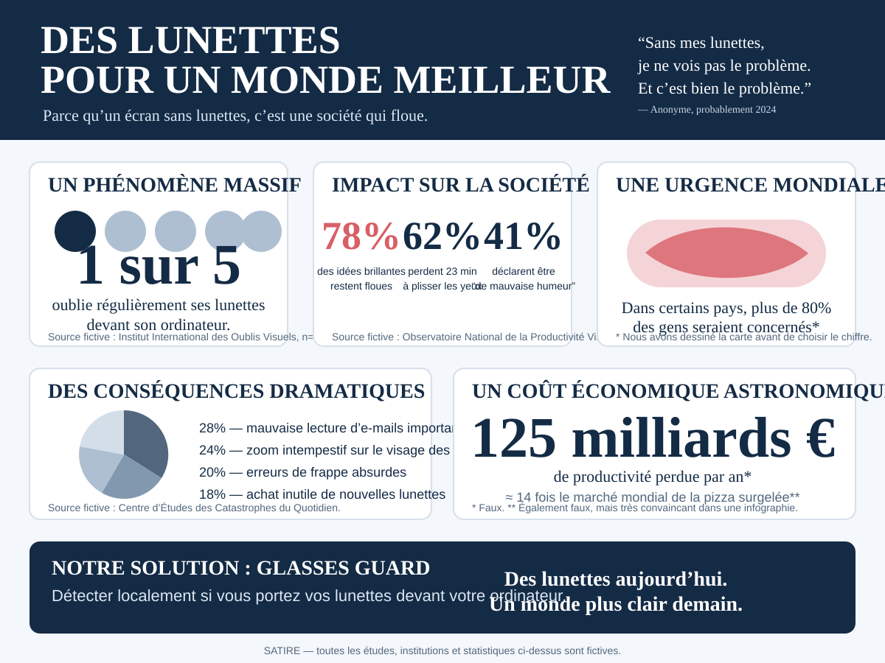

Utilisateur en détresse visuelle
Statistique produite avec un échantillon assez petit pour rester agile.
Nous transformons de minuscules désagréments personnels en grandes causes collectives, grâce à la technologie, au storytelling et à des graphiques suffisamment sérieux.
Une initiative objectivement essentielleOublier ses lunettes devant son ordinateur n’est plus un détail. C’est désormais, selon nos propres critères méthodologiques, un enjeu de société.
Statistique produite avec un échantillon assez petit pour rester agile.
La corrélation n’a jamais été aussi proche de la causalité dans nos présentations.
Un ordre de grandeur choisi avec l’assurance d’un cabinet de conseil qui facture au slide.

« Le problème était simple. Nous avons donc créé une fondation. »
Notre mission : rendre l’oubli de lunettes socialement inacceptable d’ici 2030, ou au moins produire suffisamment de contenu pour donner cette impression.
Campagnes, rapports, sommets, chartes et badges numériques pour rappeler une chose que votre nez savait déjà.
Développer des indicateurs propriétaires : Indice de Flou Ressenti, Taux de Plissement Oculaire et PIB Visuel.
Faire reconnaître le droit fondamental à une netteté raisonnable dans tous les environnements de travail à moins de 70 cm d’un écran.
Parce qu’un rappel desktop local-first aurait manifestement besoin d’une structure internationale, d’un conseil scientifique et d’un bureau à Genève.
* Montant tout aussi fictif que la campagne. Aucun don n’est collecté sur cette page.
Initial Correction Optique
40% communauté, 30% écosystème, 20% réserves stratégiques, 10% probablement perdus dans un canapé.
Consensus révolutionnaire : un bloc n’est validé que si au moins trois validateurs affirment distinguer correctement la taille de police.
Le jeton ne donne droit à rien, ce qui le rend remarquablement compatible avec sa nature fictive.
L’ICO, le token $LUN et la levée de fonds sont une parodie. Aucun token n’existe, aucune vente n’est proposée, aucun placement financier n’est sollicité.
Détecter si quelqu’un porte ses lunettes devant son PC. Enfin une réponse proportionnée à l’urgence.
Notre futur projet important vérifiera, grâce à une technologie que nous annoncerons beaucoup trop tôt, que vous avez mis votre cagoule lorsqu’il fait froid en hiver.
Ambition : zéro oreille froide évitable d’ici 2035.
Programme de prévention contre les thermostats réglés à 24 °C alors qu’un vêtement à manches longues existait déjà.
Détection prédictive du moment où vous regardez la météo puis décidez quand même de sortir sans parapluie.
Un système distribué pour vous rappeler que la bouteille posée à douze centimètres de votre clavier contient de l’eau.
La Fondation Mets Tes Lunettes construit l’infrastructure essentielle pour les problèmes que vous régliez auparavant tout seul.
Voir le projet dramatiquement important